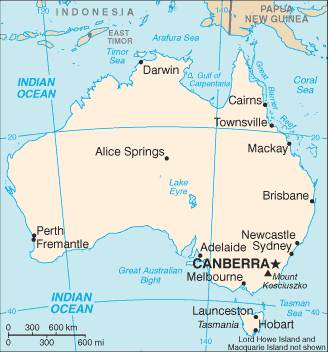
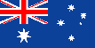

[Voir le carnet de route de l’Australie]
Itinéraire prévisionnel :
 Darwin : Kakadu National Park - Lietchfield Park - éventuellement The Kimberley
Darwin : Kakadu National Park - Lietchfield Park - éventuellement The Kimberley
 Route de Cairns à Sydney : Grande barrière de Corail - Whitsunday islands ou Fraser Island
Route de Cairns à Sydney : Grande barrière de Corail - Whitsunday islands ou Fraser Island
 Brisbane
Brisbane
 Sydney : Visite approfondie de la ville
Sydney : Visite approfondie de la ville
 
Superficie : 7 682 300 km2 (15 fois la superficie de la France)
Population : 19 millions
Capitale : Canberra
Peuples et ethnies : Européens, Aborigènes, Asiatiques
Langues : anglais, langues aborigènes (le mabinag, la langue des îles du détroit de Torres, et la langue du désert occidental étant les plus communément parlées), plus environ 200 autres (dont l’italien, le grec, le cantonais, le libanais, le vietnamien, le turc...)
Religions : Anglicans (26,1%), catholiques (26%), autres chrétiens (24%)
Institutions politiques : État fédéral (6 États, chacun pourvu d’un gouvernement et d’un parlement, et deux territoires), démocratie parlementaire sur le modèle britannique, membre indépendant du Commonwealth
Principales activités : Tourisme, charbon, or, viande, laine, matières premières
Visa : visa électronique valable 1 an qui coûte 20 AU$
Monnaie : le Dollar australien (1€ = 1.7 AU$ en 2004)
Budget quotidien : 38 à 45 US $/jour.
- Consulat :
4 rue Jean Rey, 75015 Paris.
Tél. : 01 40 59 33 06. Ouvert de 9h15 à 12h15.
http://www.austgov.fr/index.html - Office de Tourisme :
Fermé au public et infos par téléphone au 01 41 91 38 61.
http://www.australia.com
Ambasssade de France :
| Adresse | 6 Perth avenue, Yarralumla A.C.T. 2600 |
| Ville | Canberra |
| Téléphone | 61 2 621 601 00 |
| Fax | 61 2 621 601 27 |
| URL | http://www.ambafrance-au.org |